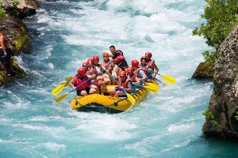

At White Water Rafting Company, we exist to bring thrill seekers closer to nature through unforgettable rafting adventures. Our mission is to provide safe, guided river experiences that inspire connection, courage, and joy. We believe in the spirit of the river wild, powerful, and uniting and we strive to honor it with every journey. With passion, teamwork, and respect for nature, we create memories that last a lifetime. Ride the Rapids. Live the Adventure.
History
White Water Rafting Company began with nothing but a raft, a fierce love for nature, and a dream to share the wild beauty of the river with the world. Founded by a small group of friends who braved untamed waters with heart and hope, White Water Rafting Company grew from weekend adventures into a trusted rafting company. Each rapid we conquered taught us something about courage, teamwork, and the power of nature. Today, we guide thousands to do the same: to feel alive, to embrace challenge, and to discover the strength that comes from flowing with the river. What started as a spark is now a roaring journey, and we are just getting started.